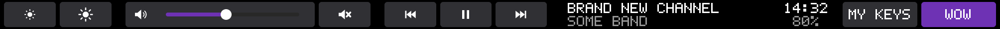

Your quest, XP, reputation, bags and gold on the strip above your keyboard, with alerts and whispers when they happen, plus your own notes and timers. The game screen stays clean. Outside the game, the bar becomes your media keys, volume and shortcuts.
Tap a tab to switch pages, or swipe. Values update within about a second of changing in game. Bag space, durability and gold sit beside the tabs on every page. Text too long for its space glides gently across instead of being cut off.
Your tracked quest with objective counts and a progress bar. Tap to cycle objectives.
Level, XP with rested on the same bar, percentage and what's left to level.
Your watched faction and standing. A dungeon queue timer with your role appears while you wait.
Quest complete, bags full, low durability, level up, new mail, ready checks and dungeon pops. Tap to dismiss.
Whispers, and guild lines that mention you. Shown on the bar only; never saved or logged.
Coordinates, a shopping list, anything. Type /wtb note here in game for your map position, add notes from the tray, or press Ctrl+Option+N anywhere for a quick-add box. Tap to flip between them; tap the × to remove one (with a few seconds to undo).
Countdowns for whatever you like: /wtb timer 10m tea in game, or from the tray. A bar empties as time runs out; when one ends, the whole bar lights up (fireworks, a laser sweep, a shockwave or a plain flash - your pick) until you tap it, in game or not.
When a timer ends, the whole bar lights up: fireworks, a laser sweep, a shockwave or a plain flash in your bar colour. Pick one from the tray icon's Timer alert menu, with a button to try it.
Press the shortcut anywhere, in WoW too, and type: buy flasks adds a note, 10m tea starts a timer. The bar confirms it. Change or turn off the shortcut in the tray's Notes and timers window.
Tap the toggle on the right until it says NOTES, then TIMERS: each gets the whole bar, next to the clock, while you do something else.
The ··· button brings volume, brightness, media and your own shortcuts into the game without leaving it.

Brightness, a volume slider, media keys, now playing, clock, battery, F1–F12 and up to 12 buttons of your own. With nothing playing, the media keys step aside and brightness gets a slider too.
WoW addons can't talk to other programs. So the addon draws a thin line of coloured dots in the corner of the game window, and the app reads only that line.
Quests, XP, reputation, bags, gold and durability, through the normal read-only addon API. It writes them into a line about 3 px tall in the top-left corner.
A small tray app captures just that strip of screen, decodes it, and throws away anything that fails its checksum.
The app draws each page onto the physical Touch Bar and handles your taps and swipes.
%LOCALAPPDATA%Turn Secure Boot off on the Mac side, then run one installer. The install guide walks through both, and how to undo everything. Rather not run a downloaded installer? Build it yourself.
Experimental. Windows has no official Touch Bar display driver, so the installer sets up the open-source DFRDisplayKm driver by Bingxing Wang, signed on your PC only. It only loads with the Mac's Secure Boot set to No Security and Windows in test mode.
Restart holding Command + R, then Utilities › Startup Security Utility › No Security. It's a Mac setting, so Windows can't do this step for you.
It checks Secure Boot, turns on test mode, sets up the DFRDisplayKm Touch Bar driver, installs the app and copies the addon into WoW. Then restart.
Start WoW and tick WoW Touch Bar under AddOns. Look for the bar icon in the tray.
In game: Esc › Options › AddOns › WoW Touch Bar, or /wtb options. Pick tabs, alerts, chat and which quest to show.
Blizzard hasn't approved it, and no tool like it is approved. It only uses the normal addon API and never reads memory, injects code or automates anything, which we read as low risk. Use it at your own risk. Our reasoning is in safety and privacy.
Yes. It's all open source. With free Microsoft tools (.NET SDK, Visual Studio Build Tools and the Windows Driver Kit) you can build your own installer from the source, or skip the installer and set up the driver, app and addon yourself with the same scripts it runs. The Touch Bar driver is downloaded from its original repo and built unchanged. Step by step: building it yourself.
Not yet. Only Windows 10 in Boot Camp is supported today. A macOS version is planned but not started.
Not tested. It's checked on WoW: Forever and WoW Retail. Classic may list it as out of date; you can tick Load out of date AddOns and try, but some pages may stay empty.
Intel MacBook Pros with a Touch Bar and the T2 chip, 2018–2020. Only the 13" 2020 has been tested; the others are expected to work. Apple Silicon Macs can't run Boot Camp.
While the driver is installed, the app draws its own volume, brightness, media and F1–F12 keys whenever WoW isn't focused. Uninstalling brings Apple's back.
That's how the addon passes information to the app. Keep it visible. If something covers it, updates pause and pick up again on their own.
Settings › Apps › WoW Touch Bar › Uninstall, then restart. That removes the app, the addon and the driver and gives you the normal Touch Bar back. Then you can set Secure Boot back to Full Security. See uninstall.